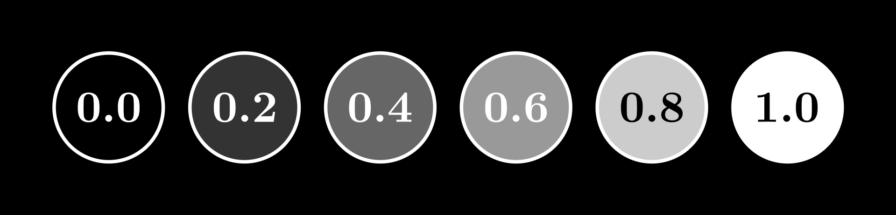

Introduction
A few years ago, several groundbreaking AI models like GPTs started emerging, and, like everyone else, I was obsessed with using them for my own projects...
In this blog, I’ll share my journey of understanding neural networks from the ground up, breaking down concepts in a way that’s easy to follow...
What Actually Is a Neural Network?
Let's kick things off with a fun exercise. Picture this: you're shown a blurry image of a number—say, a fuzzy outline of a "9."
So, what do you see? Probably a "9," right? Even though the image isn’t crystal clear, your brain leaps into action...
Building Blocks of Neural Networks
Now that we've taken a peek at the big picture, let's break down what goes into building a neural network. Think of it like assembling your favorite sandwich—each ingredient adds its own flavor and purpose. In our case, the "ingredients" are neurons, layers, weights, and biases, all coming together to make a model that can learn and decide. Let's understand each one of them—starting with the most basic element: the neuron.
Neurons
Neurons are the fundamental units of a neural network—they’re essentially the decision makers. In a computer, these neurons are represented by numbers, typically values between 0 and 1, which capture the information we feed into the network. Think of these numbers as tiny messengers that carry bits of information from one layer to the next.

For example, imagine you have an image that is 40 by 40 pixels. Each pixel in this image has a brightness value, which can be normalized to a number between 0 and 1. If you consider each pixel as a neuron, then your input layer for this image would consist of 1,600 neurons (since 40 × 40 = 1,600). Each neuron stores the brightness information of its corresponding pixel.
As the data flows through the network, it doesn’t just pass through unchanged. Instead, it is processed in successive layers. In these hidden layers, the network begins to extract patterns and features from the raw data. Often, the number of neurons decreases with each layer, as the network condenses the information into a more abstract form. By the time the data reaches the final layer, you might have a much smaller set of neurons—say, 10 neurons for a digit recognition task. Each of these final neurons represents one of the digits from 0 to 9. The neuron that ends up with the highest activation is typically interpreted as the network's prediction for what digit the image represents.
This gradual reduction—from a high number of neurons capturing detailed, raw data, down to a few neurons representing abstract, classified concepts—is a core principle of how neural networks function. Every neuron in the network plays a role in transforming the input data into a decision or prediction.
Activation Functions: The Decision-Making Helpers
So, we know that neurons are the decision-makers of a neural network. But what actually helps those neurons decide whether to fire or not? That's where activation functions come into play.
Imagine a neuron gathering a bunch of inputs, each weighted differently, and summing them all up. Without an activation function, this sum would just be a linear combination—hardly enough to capture the intricate patterns in data. Activation functions add the essential twist of non-linearity, allowing neurons to make more nuanced decisions.
Sigmoid Activation Function
The sigmoid function takes any input and squashes it into a smooth curve that ranges between 0 and 1. Think of it like a dimmer switch for a light: as the input increases, the output gradually moves from "off" (close to 0) to "fully on" (close to 1). For example, if a neuron receives a sum of inputs that’s just barely enough to pass a threshold, the sigmoid function might output a value like 0.4, indicating a partial activation. This is useful for tasks like binary classification, where you want to interpret the output as a probability.
Example: Imagine you're deciding whether to go outside based on the weather. If it's barely cloudy, you might be 40% sure it's going to be a good day—just like the sigmoid function outputting 0.4 for a borderline case.
ReLU (Rectified Linear Unit)
On the other hand, ReLU (Rectified Linear Unit) is a bit more straightforward. ReLU outputs 0 for any negative input and simply passes through positive values unchanged. It's like a gate that only opens when the input is positive. This helps the network learn faster because it avoids some of the complications that come with smoothly varying outputs. However, if a neuron consistently receives negative inputs, it might "die"—meaning it stops contributing to the network because it always outputs 0.
Example: Imagine a sensor that only reacts to sunlight. If the input (amount of light) is negative (or too dim), it stays off (0 output). But as soon as the light is bright enough, it instantly starts recording the exact amount of brightness. That’s how ReLU behaves—simple and effective for capturing the necessary signals.
In summary, activation functions like sigmoid and ReLU are critical because they empower neurons to process the weighted inputs in a meaningful way, ultimately allowing the neural network to learn and make complex decisions.
Building Blocks of Neural Networks
Now that we understand neurons and activation functions, let’s talk about how neurons are structured inside a network and what really makes them learn. Neural networks are not just a random collection of neurons; they are organized into layers, and the real magic happens when neurons interact through weights and biases.
But what are Layers??
Imagine a neural network as a multi-layered cake (or a burger, if you’re hungry). Each layer has a specific purpose, and the information flows through them in sequence:
- Input Layer: The very first layer where raw data is fed into the network. If we have a 40×40 image, we will have 1,600 neurons in the input layer, each holding a pixel value (brightness between 0 and 1).
- Hidden Layers: These are the layers between input and output, where actual computation happens. Each neuron in a hidden layer takes inputs from the previous layer, processes them, and passes the result to the next layer. This is where the network starts to recognize patterns in data.
- Output Layer: The final layer that gives the network’s prediction. In our digit recognition example, the output layer might have 10 neurons (one for each digit from 0 to 9), with the neuron having the highest activation indicating the predicted number.
The more hidden layers we have, the deeper the network—hence the term deep learning.
But how do these layers actually work? What makes a neuron decide how much influence it should have on the next layer? This is where weights and biases come into play.
Each connection between neurons carries a weight, which determines the importance of that connection. If a neuron in the hidden layer receives input from multiple neurons in the previous layer, it doesn’t treat all inputs equally—it gives more importance to some and less to others. These weights act like volume knobs, amplifying or reducing the signal strength before passing it forward. Initially, these weights are set randomly, but as the network learns, they get fine-tuned to make better predictions.
But sometimes, just using weights isn’t enough. Even if an input is weak, it might still need to activate a neuron in order for the network to learn properly. That’s where biases come in. A bias is like an additional boost that shifts the activation threshold of a neuron, ensuring that it fires even when the weighted input alone isn’t sufficient. Think of it as adjusting the baseline of a scale—sometimes, you need to tweak the starting point so that small signals don’t get ignored.
With layers organizing the network, weights determining the strength of connections, and biases fine-tuning activations, a neural network gradually learns to transform raw data into meaningful decisions.
How Neural Networks Learn
Okay, so we’ve got neurons, layers, weights, and biases all set up. But how do these networks actually learn? Do they just wake up one day and magically understand everything? Nope, they go through a process—just like us when we’re trying to learn a new skill (except they don’t procrastinate like we do).
Forward Propagation
Imagine you show our neural network a 40×40 pixel image of a "9". It doesn’t see the 9 like we do; instead, it just gets a long list of numbers (pixel brightness values). Now, these numbers travel layer by layer, getting multiplied by weights, tweaked by biases, and transformed by activation functions. Finally, the network spits out an answer—ideally "9" (but sometimes something completely wrong, like "4" or "potato").
This whole process of passing the input forward through the network is called forward propagation.
Loss Function: The "How Bad Did I Mess Up?" Meter
So what happens when the network gets the wrong answer? Well, we need a way to measure how bad the mistake was. That’s exactly what the loss function does—it’s like a strict teacher who marks how far off the answer was from the correct one.
For classification tasks (like recognizing digits), a common choice is cross-entropy loss. In simple terms, it punishes the network more when it's very confident but also very wrong—just like how life does when we overestimate our skills.
Backpropagation & Gradient Descent
Now, knowing you made a mistake is great, but what’s next? The neural network needs to correct itself, and that’s where backpropagation comes in.
Backpropagation is like your brain after embarrassing yourself in public—it replays the mistake over and over, adjusting things so it doesn’t happen again. The error from the output layer is sent backward through the network, tweaking weights and biases along the way.
And how do we decide how much to tweak each weight? Enter gradient descent—basically, the network's way of making small, calculated changes to gradually improve. Think of it like adjusting your aim in a game; if you miss a shot, you tweak your aim slightly instead of throwing the whole controller away.
To put it all together, the learning process works like this:
- Make a guess (forward propagation).
- Check how wrong it is (loss function).
- Adjust to improve (backpropagation + gradient descent).
- Repeat until it gets good!
With enough repetitions, the network stops being a clueless mess and actually gets good at recognizing patterns.
Applications of Neural Networks
Okay, so we’ve built this fancy network—now what? Can it do anything cool? Absolutely! Neural networks are everywhere, and they power a ton of stuff we use daily.
- Image Recognition & Computer Vision: Face unlock on your phone, self-driving cars, AI detecting if your cat is chonky or not.
- Natural Language Processing: Chatbots, language translators, AI-generated tweets that sound weirdly human.
- Speech Recognition: Siri, Google Assistant, Alexa—basically, AI that sometimes understands you and sometimes makes up random responses.
- Recommendation Systems: Netflix telling you what to watch next, YouTube suggesting random videos at 3 AM.
- Fraud Detection in Finance: Banks stopping you from buying 27 pizzas at 2 AM because "that seems suspicious."
Basically, if you’ve ever interacted with technology, you’ve probably used something powered by a neural network.
Wrapping It Up: The Neural Network Journey
So, what have we learned today?
- Neural networks are inspired by our brains (but they don’t overthink life decisions).
- They consist of neurons, layers, weights, biases, and activation functions working together.
- They learn from mistakes using forward propagation, loss functions, backpropagation, and gradient descent.
- And most importantly, they power some of the coolest tech we use daily.
Of course, this is just scratching the surface. There’s a whole world of deep learning, convolutional neural networks, and insane AI models out there. But hey, if you made it this far, you already know more than most people do about neural networks!
If you’re curious and want to go even deeper, I highly recommend checking out 3Blue1Brown’s Neural Networks Playlist —his animations make even the trickiest concepts feel easy.
Big thanks to ChatGPT for helping me write this blog! 🤖✨ If it ever becomes self-aware, I just hope it remembers me as a friend… and not as *that one human who kept asking for last-minute changes.* 😅😂